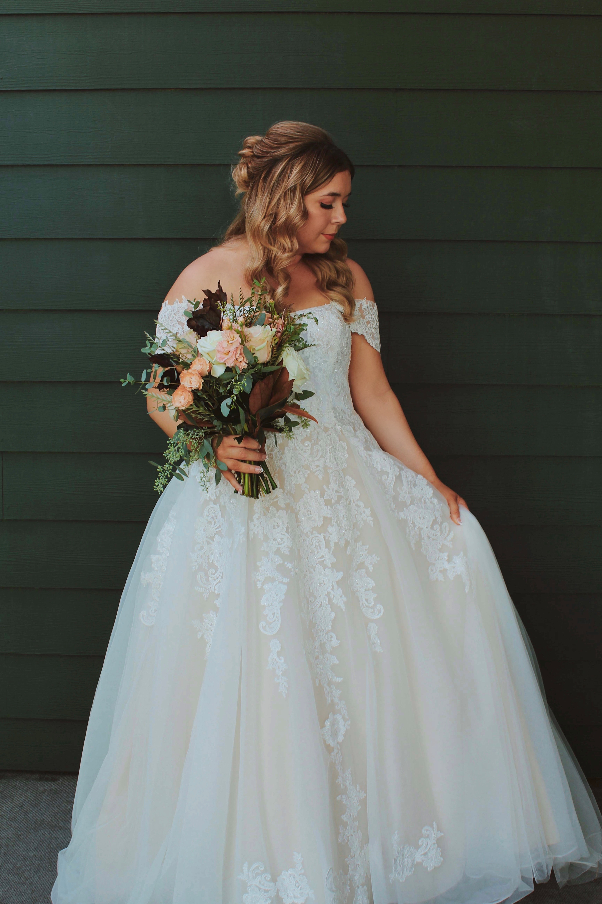
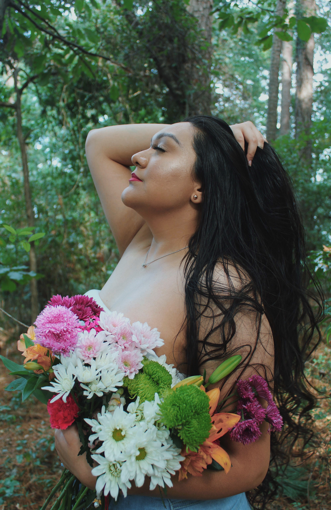
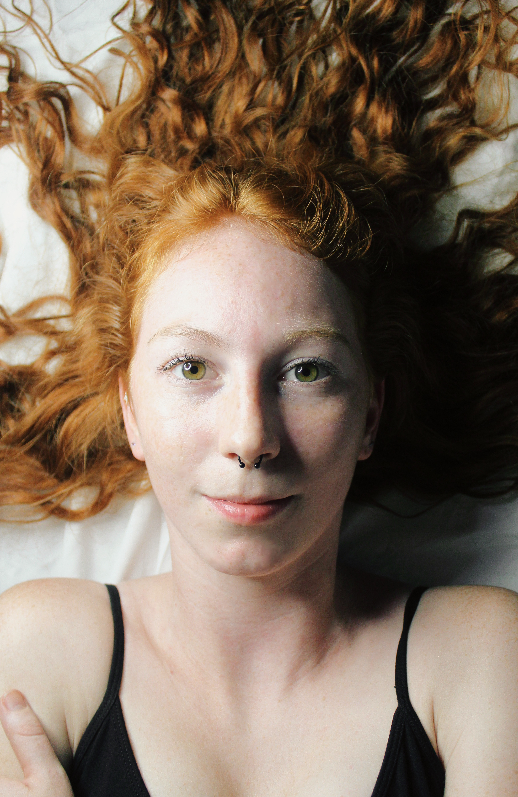

THE PERSON BEHIND THE CAMERA




Photography has been part of my life since I
got my first camera at 18,
and over the past 7 years, it's grown into a passion that's all about
capturing life as it unfolds-candid, real, and authentic moments over stiff, posed shots.
I officially stepped into the business side of photography in 2021 but took a creative & maternal
break from 2023-2025, I'm excited to be back with a renewed perspective and inspiration. What
drinks me is the joy of capturing those in-between moments-the fleeting glances, bursts of laughter,
and stories that pictures can tell without a single word. If you're looking for a photographer who
values authenticity and creativity, I'd love to hear from you.
Let's create something beautiful
together.